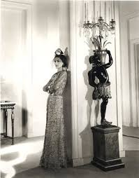
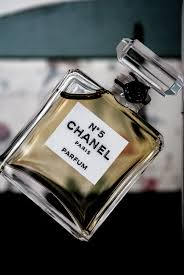
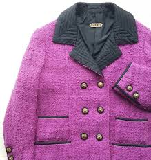
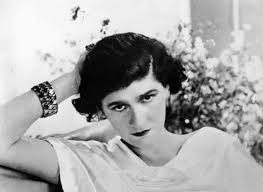
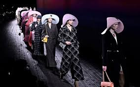

Begginings
Coco Chanel, or Gabrielle Chanel, which is her given name, was born 1883 in Saumur France. After her mother passes when she was 11 Gabrielle went to an orphanage where she learned to sew.in 1902 she left the covnant and became a seamstress she also performed as a cafe singer. This is where she got her name Coco.
In 1912 she opened her first boutique in Deauville France. She started with selling jersey into practical and elegent designs which were inspired by menswear. Many influential and wealthy women were attracted to this style because of the discomfort of the corseted styles.
Take Off
In 1926 Coco compeletly transformed fashion yet again by creating the so called Little Black Dress. Before this Black was most commonly reserved for mourning or more formal. Coco creadted the dress to be extreamly versitile. With the right accessories the dress that was a day dress could easily be transformed to an evening gown.
Coco was widly known as a successful designer but she also was able to start her own perfume line in 1921. With the help of Ernest Beaux who created the perfume. He made different mixes for her to try. Some say she considered 5 to be her lucky number which is why she picked number 5. 
She partnered with a cosmetics company to distribute Chanel No. 5 in exchange for shares. She was to receive only 10 percent of the money earned. She later had many lawsuits trying to get back her right to the perfume but never was able to. She still was able to make quite a profit off of the perfume.
Stability
The war brought a stale time to Coco's industry but in the early 1950's she began her way back to the spotligh of fashion. Chrision Dior a new fashion designer had changed French fashion in the time she was gone. An ultrafeminie look. Coco favored simpler looks, French press had not to positive reviews but her new collection was finding popularity in the United States.
Coco worked hard that year and introduced her suit design jacket and skirt. 
She also created a few other iconinc items such as the gold chain purse and two toned shoes. She was able to bring back her position in fashion as one of the most influential designers.
The Legacy
Coco passed away in 1971 with her name going down in history. Chanels industry had boomed and was led by many designers. Karl Lagerfeld was one of these designers that helped shape the chanel brand to this day. Coco was able to understand womans desires in fashion and through her hard work was able to shape her career from when she had nothing.
